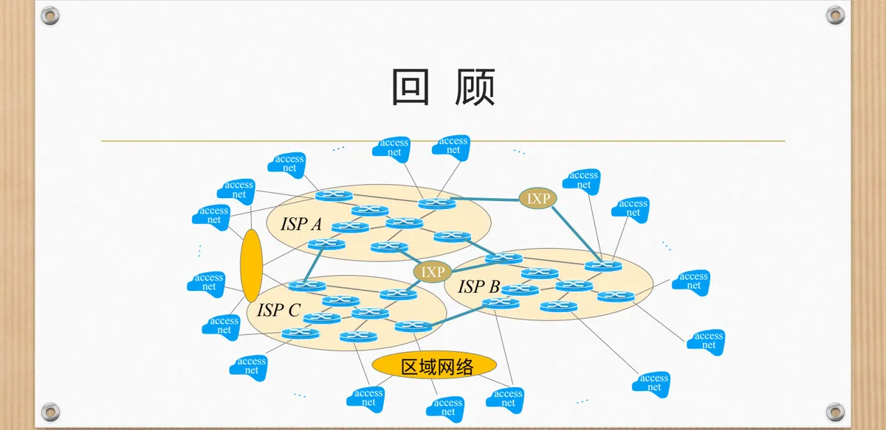
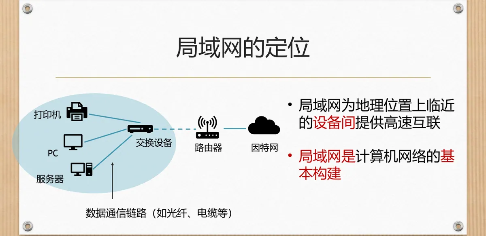
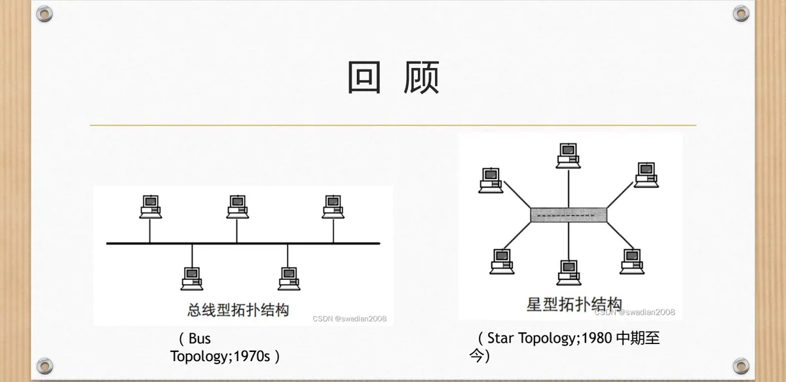
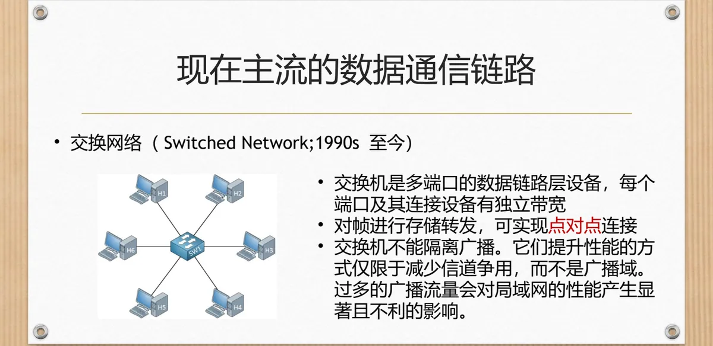

计算机通信与网络 · 第二版讲义 · 第 4 章 局域网
4.1 局域网概述
局域网是计算机网络里最基本、离用户最近的组成单元，新技术也往往先在这里落地。本节先借助因特网的整体结构看清局域网的地位，再分辨「链路」与「数据链路」这两个容易混淆的概念，然后沿总线拓扑、星型拓扑到交换网络这条线索看链路形式的演变，最后对比有线与无线两类局域网。
1. 局域网在因特网中的位置
第 1 章 1.2 计算机网络的演化讲因特网组成时给出过一幅结构图：多个因特网服务提供者 ISP（Internet Service Provider）通过因特网交换点 IXP（Internet eXchange Point）互联互通，末端再由接入网把用户接进来，中间还可能出现区域网络。沿着这幅图往末端看，最贴近用户的那一段就是局域网 LAN（Local Area Network）：它为地理位置上临近的设备提供高速互联，因而被称为计算机网络的基本组成单元——因特网再大，用户真正接触到的第一张网和最后一张网都是局域网。

局域网里连了些什么，一幅典型的组网图就说清了：PC、打印机、服务器等端系统通过数据通信链路（如光纤、电缆等）接入交换设备，交换设备再经路由器连到因特网。它提供的是设备之间高速互通的通道，而用户能访问这张网之外的服务，靠的是路由器把局域网与更大的网络连接起来。局域网既是共享资源的场所（1.3 计算机网络的分类已交代过），也是接入因特网的入口。

2. 链路与数据链路
在计算机网络中，链路（link）指两个相邻节点之间的物理通道，可以是有线的，也可以是无线的：有线链路用双绞线、光纤、同轴电缆等敷设，无线链路则借助 Wi-Fi、蓝牙、卫星通信等手段。链路是实际存在的传输媒体，只负责把信号从一端送到另一端。数据链路则不同，它是在链路的基础上配合必要的硬件和协议，实现可靠数据传输的功能层，对应开放系统互连 OSI（Open Systems Interconnection）参考模型的第二层，即数据链路层。它要做的事包括帧的封装和解封装、差错检测与纠正（如循环冗余校验 CRC，Cyclic Redundancy Check）、流量控制，以及介质访问控制 MAC（Medium Access Control）。链路提供「能传」的条件，数据链路把「可靠地传」做成一个功能层。
这与 1.5 计算机网络的体系结构里的分层正好对上：数据链路层传送的单位是帧，成帧、差错检测和物理地址寻址都在这一层完成，局域网的内容因此集中在数据链路层和物理层。其中介质访问控制尤为关键——多台设备共用一片传输媒体时，谁先发送、怎样发现冲突都属于这一层的问题，下一节 4.2 多路访问链路和协议会专门讨论。
3. 拓扑的演变：从共享总线到星型连接
局域网的链路形式经历过两次大变化。20 世纪 70 年代流行的是总线拓扑（Bus Topology）：一根共享的总线电缆把所有计算机串接起来，任一节点发出的信号都会沿总线传遍全网。它布线简单、成本低，但全部设备共用一条信道，两台同时发送时信号会互相叠加干扰，必须靠介质访问控制机制协调。20 世纪 80 年代中期以后，星型拓扑（Star Topology）成为主流：每台设备用一条独立链路连到中心设备，由中心设备转发数据。共享一条总线变成各走各的线，一台设备出问题不会拖垮整条总线，增删设备也只影响自己那一条链路。

4. 现在主流的数据通信链路：交换网络
星型拓扑的中心设备最初是集线器，20 世纪 90 年代以后换成了交换机，局域网由此进入交换网络（Switched Network）时代并延续至今。交换机是多端口的数据链路层设备：每个端口及其连接的设备都拥有独立带宽，不必像共享总线那样彼此争用；它对帧存储转发，端口与所连设备之间构成点对点连接，同一时刻可以有多对设备各自通信。
但交换机的改进是有边界的：交换机不能隔离广播，它提升性能的方式仅限于减少信道争用，而不是缩小广播域。广播帧仍会在整个交换式局域网内扩散，广播流量过多时性能会受到显著且不利的影响。这也解释了交换式以太网为什么还要靠虚拟局域网划分逻辑工作组（见 4.3 以太网）。

5. 广播链路与点到点链路
前面两种链路形式，用一组术语可以概括得更清楚。多台设备共享同一条通信信道、发送的消息会被所有设备收到的链路称为广播链路（broadcast link）；两台设备之间专用的、数据只在这两台设备间传输的链路称为点到点链路（point-to-point link）。
| 特性 | 广播链路 | 点到点链路 |
|---|---|---|
| 基本特征 | 多台设备共享同一条通信信道，发送的消息会被所有设备收到 | 两台设备之间专用的通信链路，数据只在这两台设备间传输 |
| 典型例子 | 总线型拓扑以太网、无线局域网 | 交换机和主机之间的点对点链路 |
交换机的价值由此看得更具体：它把一片共享信道的局域网拆成许多条点到点链路，需要争用信道的范围随之缩小。反过来说，只要链路是广播的，就必须有规则安排各设备何时发送——这正是 4.2 多路访问链路和协议要解决的问题，也是无线局域网至今仍把介质访问控制放在核心位置的原因（见 4.4 Wi-Fi 802.11 无线局域网）。
6. 有线局域网与无线局域网
按传输介质划分，局域网分为有线与无线两类。有线局域网以双绞线、同轴电缆、光纤等为介质，抗干扰能力较强，延迟低、带宽高、连接稳定，代价是要靠交换机、集线器等有线连接组网，布线复杂、灵活性差。无线局域网 WLAN（Wireless Local Area Network）用无线电波传输，Wi-Fi 7 的速率可达 10 G+ bps，但受距离和干扰影响很大，延迟与带宽波动明显；它由接入点 AP（Access Point）通过无线信号与设备通信，易于扩展和移动。两者的取舍集中在「稳定高速」与「灵活可移动」之间。
| 特性 | 有线局域网 | 无线局域网 |
|---|---|---|
| 传输介质 | 双绞线、同轴电缆、光纤等 | 无线电波 |
| 速率 | 常见为 100 Mbps、1 Gbps、10 Gbps 等 | Wi-Fi 7 可达 10 G+ bps，但受距离和干扰影响大 |
| 抗干扰能力 | 较强，不易受外界无线电干扰 | 易受电磁波、障碍物干扰 |
| 稳定性 | 延迟低、带宽高、连接稳定 | 延迟和带宽波动大 |
| 部署 | 通过交换机、集线器等有线连接组成网络，布线复杂，灵活性差 | 由接入点通过无线信号与设备通信，易于扩展和移动 |
本节小结
- 局域网 LAN 为地理位置上临近的设备提供高速互联，是计算机网络的组成单元，也是用户接入因特网的入口；
- 链路是两个相邻节点之间的物理通道，数据链路则是在链路之上配合硬件和协议实现可靠传输的功能层，对应 OSI 第二层，负责成帧、差错检测与纠正、流量控制和介质访问控制；
- 链路形式从总线拓扑走到星型拓扑，90 年代起由交换机组成交换网络并成为主流；交换机端口间可实现点对点连接，但不能隔离广播；
- 广播链路上多台设备共享信道（总线型以太网、无线局域网），点到点链路上数据只在两台设备间传输（主机与交换机端口）；共享信道就得用介质访问控制来协调，这正是 4.2 节的主题；
- 有线局域网稳定、速率高，但布线复杂、灵活性差；无线局域网易扩展、便于移动，速率却受距离和干扰影响大。